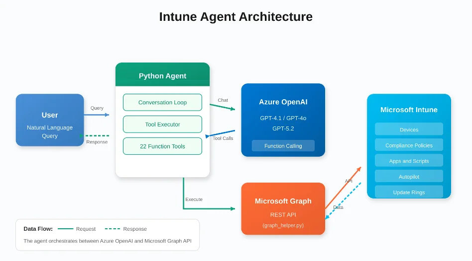
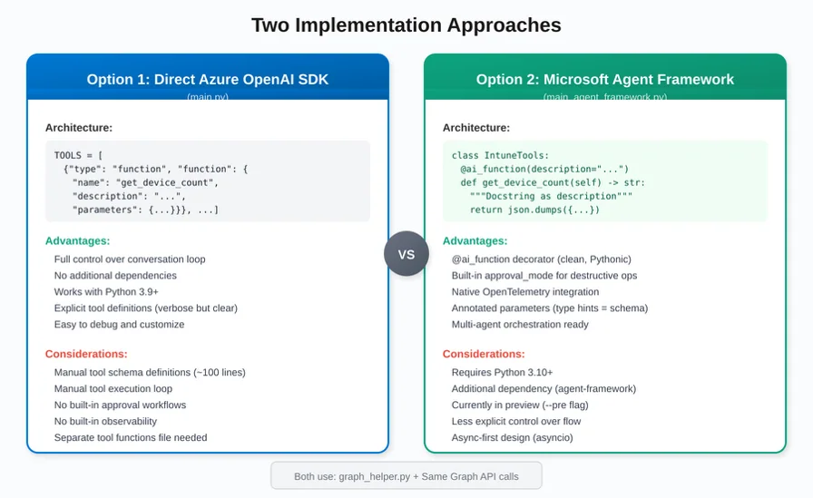
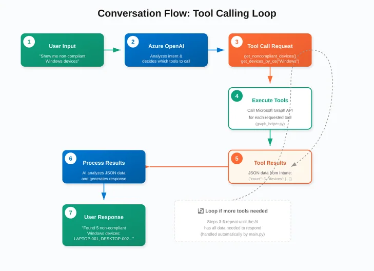
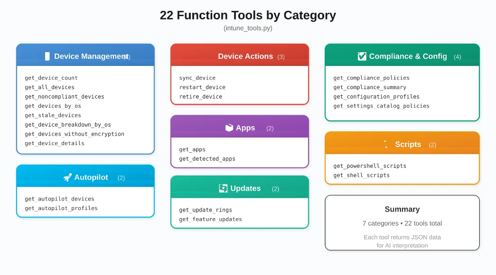

Build a Microsoft Intune AI Agent with Foundry
Weâve all built PowerShell scripts to query Intune, wrapped them in some automation, and called it a day. It works. But with Azure OpenAI Service and models like GPT-4.1 and GPT-5.2 optimized for tool calling, thereâs a more interesting approachâbuilding an actual Intune agent that can talk to your Intune environment in plain language.
Instead of writing a script for every query, you build one Intune agent that understands natural language and calls the Graph API on your behalf. Ask it âwhich Windows devices are non-compliant?â and it figures out the right API call, executes it, and summarizes the results. Itâs not magicâitâs function calling with a nice interface.
In this post, Iâll walk you through two different approaches to building this Intune agent: the classic direct SDK approach and the newer Microsoft Agent Framework. Both use the same underlying Graph API client, but differ in how they orchestrate the AI. Letâs dive in.
Intune Agent Architecture Overview
Before diving into the code, letâs understand how all the pieces of the Intune agent fit together. This follows the same broader pattern as AI-powered Intune policy documentation and conflict analysis: use AI to interpret Intune data instead of only retrieving it.

Figure 1: High-level architecture of the Intune agent
The Intune agent acts as an orchestrator between the user, Azure OpenAI, and Microsoft Graph. When you ask a question, the Python agent sends it to Microsoft Foundry / Azure OpenAI, which decides which tools to call. The agent executes those tools via the Graph API and feeds the results back to the AI for interpretation.
Two Implementation Approaches
This project provides two ways to build the same agent. Both share the same graph_helper.py for Graph API calls, but differ in how they integrate with Azure OpenAI:

Figure 2: Direct SDK vs. Microsoft Agent Framework
| Aspect | Direct SDK (main.py) | Agent Framework |
| Python Version | 3.9+ | 3.10+ required |
| Tool Definition | Manual JSON schema | @ai_function decorator |
| Parameters | Explicit JSON schema | Annotated[type, âdescâ] |
| Approval Flow | Manual (in system prompt) | Built-in approval_mode |
| Observability | Custom logging | Native OpenTelemetry |
| Execution Model | Synchronous | Async (asyncio) |
| Maturity | Production-ready | Preview (âpre) |
Which should you choose? Use the Direct SDK approach if you need production stability today or are on Python 3.9. Use the Agent Framework if you want cleaner code, built-in approval workflows, and are okay with preview software.
What is Microsoft Foundry?
If youâve been following Azure AI Studio, you might have noticed the rebrand. At Ignite 2024, Microsoft introduced Azure AI Foundry Agent Service as a public preview, and by May 2025 it went GA with over 10,000 customers already using it. The platform has since evolved into Microsoft Foundryâa unified experience for building, deploying, and managing AI agents with enterprise-grade security, which is exactly what our Intune agent runs on.
The key pieces that matter for us:
- Foundry Agent ServiceâThe runtime that hosts your agents, handles conversations, orchestrates tool calls, and manages state
- Foundry ModelsâAccess to GPT-5.2, GPT-4.1, Claude, and 11,000+ other models through one endpoint
- Microsoft Agent FrameworkâThe unified SDK (successor to Semantic Kernel + AutoGen) for building agents locally
- Function CallingâYour agent can invoke custom toolsâlike the Microsoft Graph API
GPT-4.1 vs GPT-5.2: Which Model Should Your Intune Agent Use?
Both models are available in Azure OpenAI Service and optimized for different scenarios, so the right pick depends on how you want the agent to behave.
| Aspect | GPT-4.1 | GPT-5.2 |
| Context | 1M tokens input | 272K tokens |
| Latency | Fastâoptimized for real-time | Slowerâdeep reasoning takes time |
| Tool Calling | Excellent for coding/tools | Full tool support, raw payloads |
| Best For | Quick queries, real-time chat | Complex analysis, agentic workflows |
How the Conversation Flow Works
The magic happens in the tool-calling loop. Hereâs the step-by-step flow when you ask the agent a question:

Figure 3: The tool-calling loop that powers the agent
The key insight is that steps 3-6 can repeat multiple times. If your question requires data from multiple sources, the AI might call multiple tools in sequence, combining the results to give you a complete answer.
Approach 1: Direct Azure OpenAI SDK
This is the classic approach using the openai Python package directly. You define tools as JSON schemas and manage the conversation loop yourself.
Tool Definition (main.py)
Tools are defined as a list of JSON objects with explicit schemas:
TOOLS = [   {"type": "function", "function": {       "name": "get_devices_by_os",       "description": "Filter devices by operating system",       "parameters": {           "type": "object",           "properties": {               "operating_system": {                   "type": "string",                   "description": "OS: Windows, iOS, Android, macOS"               }           },           "required": ["operating_system"]       }   }},   // ... 21 more tool definitions]
The Conversation Loop
You manually handle the tool execution loop:
response = client.chat.completions.create(   model=model,   messages=messages,   tools=TOOLS,   tool_choice="auto")# Handle tool calls in a loopwhile assistant_message.tool_calls:   for tool_call in assistant_message.tool_calls:       result = execute_tool(           tool_call.function.name,           json.loads(tool_call.function.arguments)       )       messages.append({           "role": "tool",           "tool_call_id": tool_call.id,           "content": result       })      # Get next response   response = client.chat.completions.create(...)   assistant_message = response.choices[0].message
Approach 2: Microsoft Agent Framework
The Microsoft Agent Framework (successor to Semantic Kernel + AutoGen) provides a cleaner, more Pythonic way to define the tools your agent exposes, using decorators and type hints.
Tools are defined as methods with the @ai_function decorator:
from agent_framework import ai_functionfrom typing import Annotatedclass IntuneTools:   @ai_function(description="Filter devices by operating system")   def get_devices_by_os(       self,       operating_system: Annotated[str, "OS: Windows, iOS, Android, macOS"]   ) -> str:       """Filter devices by operating system."""       result = self.client.get_devices(           f"operatingSystem eq '{operating_system}'"       )       return json.dumps({'count': len(result), 'devices': result})Notice how the parameter description comes from the Annotated type hintâno separate JSON schema needed!
Built-in Approval Mode for Destructive Actions
One killer feature is built-in approval workflows:
@ai_function(   description="Retire a device from Intune. USE WITH CAUTION!",   approval_mode="always_require" # Built-in human-in-the-loop!)def retire_device(   self,   device_id: Annotated[str, "The device ID to retire"]) -> str:   result = self.client.retire_device(device_id)   return json.dumps(result)With approval_mode=âalways_requireâ, the framework automatically pauses before executing destructive operations and asks for user confirmation.
Simplified Agent Creation
The agent creation and execution is much cleaner:
from agent_framework.azure import AzureOpenAIChatClientclient = AzureOpenAIChatClient(   endpoint=os.environ['AZURE_OPENAI_ENDPOINT'],   credential=credential,   api_version="2024-10-21")agent = client.create_agent(   name="IntuneAgent",   instructions=SYSTEM_PROMPT,   model=os.environ['MODEL_DEPLOYMENT_NAME'])# Run with all tools - framework handles the loop!result = await agent.run(   user_input,   tools=intune_tools.get_all_tools())
Both implementations give your Intune agent the same 22 tools across 7 categories:

Figure 4: All 22 function tools organized by category
Quick Start
Both approaches share the same setup:
# Clone and setup
https://github.com/JayRHa/intune-agent
cd IntuneAgent
python -m venv venv
source venv/bin/activate
# Install dependencies
pip install -r requirements.txt
# Configure Azure (creates app registration automatically)
az login
./setup.sh
# Run your preferred approach
python main.py                   # Direct SDK
python main_agent_framework.py   # Agent Framework
What Can You Actually Do With This Intune Agent?
- âShow me all non-compliant devicesââInstant compliance dashboard
- âWhich Windows devices havenât synced in 48 hours?ââTroubleshooting stale devices
- âBreak down our fleet by OSââQuick inventory analysis
- âFind devices without disk encryptionââSecurity auditing
- âSync all Windows devicesââBatch operations
- âShow me Autopilot deployment statusââDeployment tracking
The Bottom Line
Building an Intune agent isnât science fiction anymore. With Azure OpenAI Service and the Graph API, you can create something genuinely useful in an afternoon. The hardest part is honestly just setting up the app registration permissions.
The Direct SDK approach gives you full control and works today in production. The Agent Framework approach is cleaner and more powerful, with built-in approval workflows and observabilityâbut itâs still in preview. Choose based on your needs.
The full code for the Intune agent in both approaches is available on GitHub. If you build something cool with this, let me knowâIâd love to see what people create. If you want the earlier Azure OpenAI Studio version of this idea, check out Create your own Intune Co-Pilot using Azure OpenAI Studio.
Resources
Microsoft Agent Framework Overview
Agent Framework GitHub Repository
Microsoft Foundry Documentation
Azure OpenAI Service Models
Microsoft Graph API for Intune
GPT-4.1 Announcement
GPT-5.2 Announcement